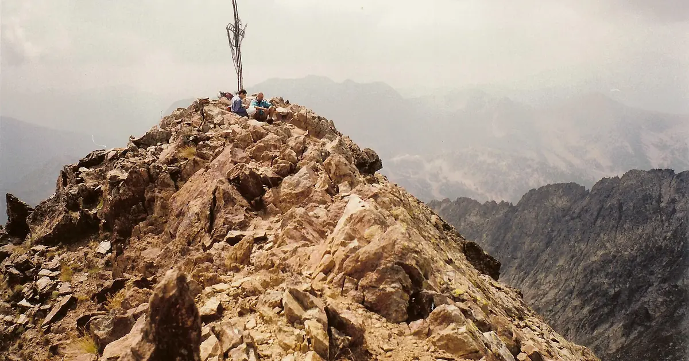

Verbier questions answered: snow, levels, Mont Fort and getting there
Verbier sits at 1,500 m above the Val de Bagnes and is the best-known village of the 4 Vallées, with the ski domain topping out at Mont Fort, 3,330 m. These are the questions we hear most about it, answered with facts from the sources below and with our own snow history.
See the live snow forecast for 4 Vallées – Verbier/La Tzoumaz/Nendaz/Veysonnaz/Thyon in the SnowScope appSnow depth, powder alerts and the 3D map, free.
Who is Verbier for?
Above all for good skiers and freeriders. The Bec des Rosses hosts the finals of the Freeride World Tour every year, and much of the terrain that made Verbier famous is steep, unmarked and serious. Intermediates have a large network to explore, and beginners have gentle slopes near the village, but the resort's character is set by its big, wild faces.
How big is the ski area?
It depends on who measures. The resort claims a total of 410 km of marked runs for the 4 Vallées, while independent experts measured 164 km. Either way, the area links Verbier with La Tzoumaz, Nendaz, Veysonnaz and Thyon, and a skier can spend a week without repeating a run.
Where is the best snow, and at what height?
Height decides everything here. Our snow history covers 46 past winters (1980-81 to 2025-26) at three heights, as model values for an area: at 905 m, low in the valley, the deepest snow of a typical winter is only about 45 cm, and no week of the season reliably has 50 cm. At 2,103 m it is about 137 cm, with at least 50 cm for 19 weeks in 9 winters out of 10. Near Mont Fort, at 3,301 m, the typical peak is about 354 cm.
Mont Fort itself, whose summit is at 3,328 m, is the high point of the 4 Vallées; the cable car arrives at 3,308 m, and the Tortin glacier on its north-west side is part of the ski area in winter and early spring. North-facing slopes up there hold cold snow longest; south-facing ones in the lower half soften first.
Which month should I book?
For mid-mountain, February and March are the safest bets: a typical winter has about 111 cm at 2,103 m in February and 117 cm in March, against about 53 cm in December. High up, the snow keeps building late: near Mont Fort the usual depth is about 235 cm in March, 281 cm in April and 290 cm in May. That makes Verbier a strong spring choice for skiers who stay high.
Is the snow getting less reliable?
Somewhat. In our first fifteen winters from 1980-81 the median peak at 2,103 m was about 151 cm; in the last fifteen, up to 2025-26, it was about 135 cm, and the days with snow on the ground fell from about 268 to 228. Last winter, 2025-26, was close to the middle, with a peak of about 136 cm. The lowest runs, back towards the valley, feel the change most.
How do I get there?
By train: a regional train, known as the Saint-Bernard Express, runs from Martigny to Le Châble, where a cable car or a post bus goes up to Verbier. By car or transfer, the village is about two hours' drive from Geneva Airport. Staying near the main lift station saves time in the morning queue.
How do I stay safe off-piste?
Read the Swiss avalanche bulletin of WSL-SLF every morning before leaving the marked runs, carry a transceiver, shovel and probe, and hire a guide for the big faces and the glacier. Snow on our map does not mean a lift is running: check the official website for lifts and opening dates.
Tips for skiers
- Book February or March for the most reliable snow at mid-mountain; April and May for deep snow up high.
- Beginners: use the gentle slopes near the village and ride down by lift when the low runs are thin.
- Off-piste: WSL-SLF bulletin every morning, safety kit and a guide.
- Arrive by train via Martigny and Le Châble to avoid the mountain road.
References and credits
- Wikipedia, 'Verbier', retrieved 7 November 2026. en.wikipedia.org/wiki/Verbier
- Wikipedia, 'Mont Fort', retrieved 7 November 2026. en.wikipedia.org/wiki/Mont_Fort
- WSL Institute for Snow and Avalanche Research SLF: avalanche bulletin and snow situation (Switzerland). www.slf.ch/en/avalanche-bulletin-and-snow-situation/
About these numbers
Snow numbers: SnowScope snow history, 46 past winters (1980-81 to 2025-26) at three heights of the resort, a model of the past corrected for height (an estimate for an area, not resort reports). Lift, run and access facts: the sources listed below, checked on the date shown.
Official avalanche bulletins: WSL-SLF
Cite this report
For research, teaching or the press: the numbers and charts are free to reuse under CC BY 4.0 with this citation.
SnowScope (2026), Verbier questions answered: snow, levels, Mont Fort and getting there, https://snowscope.app/blog/en/2026/11/verbier-questions-snow-mont-fort-4-vallees.html, accessed 2026-11-09
SnowScope (Atlas Labs). (2026, November 9). Verbier questions answered: snow, levels, Mont Fort and getting there. SnowScope snow reports. https://snowscope.app/blog/en/2026/11/verbier-questions-snow-mont-fort-4-vallees.html
BibTeX
@misc{snowscope2026verbierquestionssnowmont,
author = {{SnowScope (Atlas Labs)}},
title = {Verbier questions answered: snow, levels, Mont Fort and getting there},
year = {2026},
month = nov,
howpublished = {\url{https://snowscope.app/blog/en/2026/11/verbier-questions-snow-mont-fort-4-vallees.html}},
note = {Published 2026-11-09 21:51 UTC; accessed 2026-11-09}
}· CC BY 4.0 · Methods, data and tools →
More snow reports

Kope got 21 cm of new snow in the last 72 hours. It now has about 11 cm on its upper slopes, according to our snow model.

The most snow in the Alps is at Bonneval-sur-Arc: about 55 cm on the upper slopes, according to our snow model. Next come Schnalstal with 48 cm and …

The Alps saw significant snowfall in the last 72 hours, with Isola 2000 reporting 58 cm of new snow by Thursday, November 5, 2026.